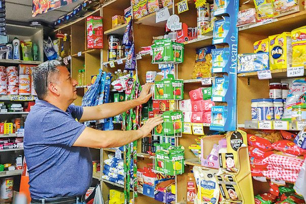

El valor de los almacenes de barrio

Los almacenes de barrio son una parte escencial del barrio mismo, la mayoría de los recuerdos de infancia involucra siempre una panadería, un kiosco, una verdulería que recordamos con cariño. Pero no todos los almacenes generan eso, ¿Dónde está la clave? en la atención. A diferencia de un supermercado, el cliente del almacen no es un número más, es una historia...